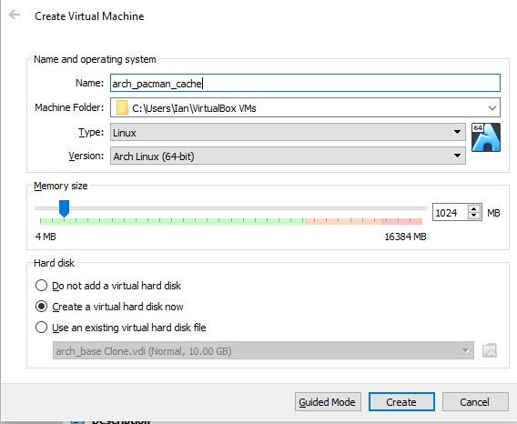
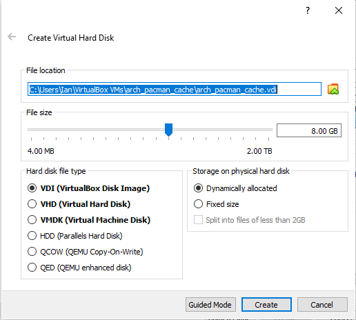
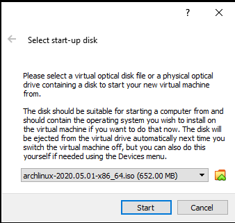
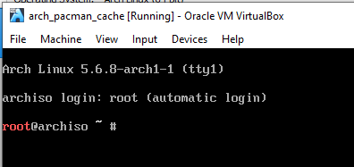
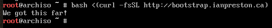

Automating provisioning Arch
This is part 1 of a 4 part series describing how I provision my systems. Links to each part are below:
Introduction
edit 2020-10-20
As I use this script to provision machines I’m going to end up making edits to it. I’m not going to edit this post every time I do that. The latest version of the provision script is always available here.
I’ve also updated the TLDR section a bit based on some experience from the install. That part I will update if I make changes since I use it for reference when building systems.
Actual Introduction
I’ve installed a lot of operating systems a lot of times. The goal of writing out this post is to force me to really think about and clearly document a reproducible workflow for building my workstation.
A secondary goal is to get better at bash.
Inspiration
There are a lot of very smart people out there doing similar things. In the past I’ve used Luke Smith’s LARBS as a base that I forked and modified. There was also this recent discussion on Reddit which pointed me to a couple of very interesting repositories to get inspiration from: Brennan Fee’s provision-arch and Morten Linderud’s PKGBUILDS
TLDR
For future me when I want to actually just install Arch on a system:
Setting up WiFi
In the case where I’m doing this on a laptop I’ll likely have to get on WiFi before I can continue.
systemctl start iwd.service
iwctl
device list #magically changed my device name to wlan0 here somehow
station wlan0 connect <your SSID> # You can enclose it in quotes if it has spaces
<enter passphrase>
exit
dhcpcd wlan0That should work, try pinging something just to be safe.
Make sure partitions are set up
I’m a wuss and don’t trust a script to actually create partitions. lsblk will tell you what disks you have. If you need to create/delete partitions before proceeding use cfdisk /dev/sd<letter> to create them. If it’s a completely blank hard drive and you need to create a boot partition make one at the beginning of the disk with 500M of space in cfdisk and then run mkfs.vfat -F32 /dev/sd<letter>1 to format it. There’s probably a cleaner way to clean out the LVMs this script creates but for now it’s easier for me to just blow them away in cfdisk and create a fresh partition to install over. edit: I got braver. The new script has an option to just wipe the whole disk if you want.
Run the script
bash <(curl -fsSL http://bootstrap.ianpreston.ca)Post install
- Get the Wifi going again. It’s a different command than you use from the installer:
nmcli device wifi connect <SSID> password <password>- Set up ssh keys - plug in the USB
lsblk # find where the partition with the keys is stored
mkdir ssh # make a mount point
sudo mount /dev/sd<something> ssh
cp -R ssh ssh_local # Have to set permissions on keys (stupid NTFS)
cd ssh_local/CA
chmod 600 host_ca
chmod 600 user_ca
cd ../
chmod +x setup_host.sh
chmod +x setup_user.sh
sudo ./setup_host.sh
./setup_user.shAfter this point you should be able to run ansible to complete the setup.
Setting up for testing
I ended up working on this project over a period of time. Initially I was using a VM in Virtualbox. I document the steps for setting that up below. After a while I ended up putting docker on my Windows machine that I was using for testing, and found it conflicted with Virtualbox, so I switched to Hyper-V. Finally I got my hands on a beater notebook and ended up finishing up on that.
Prepping the VM
First thing to do for any install is download the ISO. I’m going to use Virtualbox as my hypervisor. No particular reason, I’ve just used it in the past and am comfortable with it.
Then I create a base image to work off of.


Fire up the new VM, and select the Arch ISO at the prompt:

After that we’re at the boot prompt. Now comes the fun task of developing a bootstrap script that will automate the install process.

Getting the bootstrap script to the machine
I’ve created a repository on GitHub to host code like this. I think I could probably just install git on the boot machine, clone the whole repo, navigate to the bootstrap script, and run it. That’s no fun though. Let’s see if I can find a more complicated approach just to save a few keystrokes.
The full URL to the raw script is at this page. That’s pointing to the branch I’m using while I develop the script. When I’ve got it working I’ll hopefully remember to come back here and point it to the master reference. From there I can go to my domain registrar and add a URL redirect record to point an easy to remember subdomain to that path:
So now bootstrap.ianpreston.ca redirects directly to my shell script.
To actually get the script onto my machine and run it I’ll use curl. The exact syntax will be
bash <(curl -fsSL http://bootstrap.ianpreston.ca)-f Specifies that the script should fail silently. Otherwise if there’s an http error it will return a 404 page, which I’d then try and run. I’d rather it just not return anything and fail that way.
-L Specifies that if the server reports that the page has moved then curl will redo the request.
-sS Means the script should run silently, unless there’s a failure, in which case it will show the output. -S means show error and -s means silent.
As I’m writing this the shell script doesn’t really do anything, it just prints something out so I know it worked. Here’s where it’s at at this point:
#!/usr/bin/env bash
# To install: bash <(curl -fsSL http://bootstrap.ianpreston.ca)
echo "We got this far!"As a quick aside, I don’t write bash scripts often, so I often forget how exactly to set up the shebang. For bash scripts I’ve seen #!/bin/bash and #!/usr/bin/env bash. It seems like in most circumstances they’re interchangeable. This StackOverflow post suggests that the latter is slightly more flexible/portable so I’m going to try and make a habit of using it in my scripts going forward.
Back at the VM I test my overly elaborate bootstrapping setup and…

Sweet!
Bootstrapping the install
Borrowing liberally from the Arch Install Guide and the previously mentioned arch bootstrap script by Brennan Fee let’s build up a script to auto install Arch. The goal isn’t to do everything with the script, we just need to get to a minimal environment with an SSH server so that Ansible can take over.
Strict mode
The first couple lines of Brennan’s script include a bunch of things I don’t really understand. Since part of the goal of this is learning more bash I’m going to dissect them before moving on. The lines in question are:
SOURCED=false && [ "${0}" = "${BASH_SOURCE[0]}" ] || SOURCED=true
if ! $SOURCED; then
set -eEu
shopt -s extdebug
trap 's=$?; echo "$0: Error on line "$LINENO": $BASH_COMMAND"; exit $s' ERR
IFS=$'\n\t'
fiLet’s break this up into tiny chunks. SOURCED=false is used to set a shell variable to false. Next up && is a list operator which will only run the next command if the previous one succeeded. So if we set SOURCED to false successfully then the next command will be executed.
Putting something inside square brackets means to evaluate the expression inside and return success or failure based on that. You can use it for if statements, or use it to only execute a subsequent command based on the result of the conditional. Luke Smith has a good video explaining how to avoid if statements by writing code like the line we’re evaluating.
So what are we actually evaluating in the square brackets? This StackOverflow post explains the difference between ${0} and ${BASH_SOURCE[0]}. I’ll outline the difference below with an example script called a few different ways:
I’ve got a script called experiment.sh which I’ll be running to check out these smaller components of the script
#!/usr/bin/env bash
echo "0: [$0] vs bash_source: [${BASH_SOURCE[0]}]"Here’s the output of running that script a few different ways:
root@archiso ~ # bash ./experiment.sh
0: [./experiment.sh] vs bash_source: [./experiment.sh]
root@archiso ~ # ./experiment.sh
0: [./experiment.sh] vs bash_source: [./experiment.sh]
root@archiso ~ # . ./experiment.sh
0: [./experiment.sh] vs bash_source: []
root@archiso ~ # source ./experiment.sh
0: [./experiment.sh] vs bash_source: []If I execute the script in a subshell, as with the first two examples, then they are equivalent and the expression will evaluate to true. If I source the script - that is I tell it to execute the commands in my current shell, then they will not be equivalent.
Back to the script the shell variable name makes sense now and I can put this all together. Set the shell variable SOURCED to false, check whether the script is being sourced or not, and if it is, update the SOURCED shell variable to true (Since the || operator says to only execute the subsequent command if the previous did not return true).
Inside this block we have some commands that, as described above, will only run if the script is being run from its own subshell. The first command, set -eEu uses the set builtin to change the value of some shell options. -e forces the script to exit if almost any command in the script fails (the link provided above for set includes more details). -E let’s errors that occur within functions be trapped by the shells they inherit from. That’s confusing because it’s how I’d normally expect error handling to work, not a special case. This post explains what’s going on. Finally, -u treats unset variables and parameters as an error. Again, this is what I’d expect a sane language to do by default. I think the normal behavior is to just return an empty string in bash though. Gross.
Next up is shopt -s extdebug. The shopt builtin lets us set additional shell options. The details of extdebug are in the previous link, but basically it allows better error tracing within function calls.
The next line is a bit of error handling as well. trap catches certain signals and runs a command in response. The basic syntax is trap <command to run when caught> <signals to catch>. Looking at trap 's=$?; echo "$0: Error on line "$LINENO": $BASH_COMMAND" exit $s' ERR that means if/when an ERR signal occurs in the script we’ll set the shell variable s to the exit status of the last task (that’s what $? is), print the filename of the shell script ($0), the line number of the error and it’s command, along with its exit status. Because of the options set above there’s no need to explicitly tell the trap to exit.
The final line in the block changes the internal field separator from the default of <space><tab><newline> to <newline><tab>. The link above explains in general what that’s for. We’ll have to get a bit farther along in the script to see why it’s being used here.
Text formatting
That part was dense. The next few lines are easier:
# Text modifiers
Bold="\033[1m"
Reset="\033[0m"
# Colors
Red="\033[31m"
Green="\033[32m"
Yellow="\033[33m"Text enclosed within $Bold and $Reset will be bolded. Similarly, enclosing within one of the colours and $Reset will set the text to that colour.
Setup paths
The next section sets up a log file:
WORKING_DIR=$(pwd)
LOG="${WORKING_DIR}/arch-install.log"
[[ -f ${LOG} ]] && rm -f "${LOG}"
echo "Start log..." >>"${LOG}"pwd stands for “print working directory”. When you enclose a command in $() it means to take the result of the command. To quickly illustrate, EXAMPLE=pwd would set EXAMPLE to “pwd”, whereas EXAMPLE=$(pwd) would set EXAMPLE to something like /root. The first two lines therefor set the LOG variable to point to a file in the current directory named arch-install.log.
The next line checks if the logfile exists, and deletes it if it does.
The final line writes “Start log…” into the logfile. >> redirects the output of the previous command to the end of the file on the right hand side. Since we know this is a brand new file (because of the line above) this will be the first line of the logfile.
Flags and variables
The next section sets up some system based flags
SYS_ARCH=$(uname -m) # Architecture (x86_64)
UEFI=0
KEYMAP="us"
WIFI=0uname returns system information, and the -m flag specifies to return the machine hardware. As the comment above describes this will likely return x86_64. Later in the script we’ll check if the system is UEFI or BIOS.
User provided variables
Here we just provide some defaults to variables that the user will set later in the script.
# User provided variables
HOST_NAME="computer"
KERNEL_VERSION="default"
MAIN_DISK="/dev/sda"
ROOT_PWD=""
ANSIBLE_PWD=""Common helper functions
The next section has a series of small functions that will be used throughout the larger script. Let’s see what they do. The first one is:
print_line() {
printf "%$(tput cols)s\n" | tr ' ' '-' |& tee -a "${LOG}"
}The function name gives a pretty solid hint what it does. printf Allows you to print a combination of strings and variables along with specified formatting for the variables. There’s some good docs here. tput provides information about the current terminal, in this case cols says the number of columns that make up a row in the terminal. In my VM tput cols returns 100 so the printf would resolve to printf "%100s\n" which means we’ll print spaces across the width of the terminal. |& means to take the output (both from standard error and standard output, as opposed to just | which only return standard output) of the previous command and pass it as an input to the following command. tr in turn replaces the first string with the second, so we turn spaces into dashes, creating a line of dashes across the screen. Finally, that line of dashes is piped to tee -a which sends its input both to standard output and a file. The -a flag means to append the output to the file rather than overwriting it. All of that to say this function prints a line of dashes across your screen and into the logfile we defined above.
Next up we have blank_line, which based on the explanation above is pretty self explanatory.
blank_line() {
echo -e "\n" |& tee -a "${LOG}"
}Next up is print_title
print_title() {
clear
print_line
echo -e "# ${Bold}$1${Reset}" |& tee -a "${LOG}"
print_line
echo "" |& tee -a "${LOG}"
}clear clears the screen. Everything else has been explained except $1 which is just the first argument passed to the function. This means calling print_title "This is the title" would clear the screen, print a line of dashes to the screen and log file, print This is the title to the screen and log file, another line, and then start at the beginning of a new line for whatever text follows.
After that is print_title_info
print_title_info() {
T_COLS=$(tput cols)
echo -e "${Bold}$1${Reset}\n" | fold -sw $((T_COLS - 18)) | sed 's/^/\t/' |& tee -a "${LOG}"
}echo just prints some text, the -e flag tells it to interpret escaped characters, so \t will show a tab rather than the literal \t. That gets piped to fold, which wraps the text at 18 characters less than the width of the terminal. -s tells it to wrap at the last whitespace before the column limit (so don’t wrap in the middle of a word) and w is how you specify the column width to wrap on. After that we pipe the output to sed which I frankly find intimidating. This one’s not so bad though. 's/<pattern>/<other pattern>/' just performs a find replace of <pattern> for <other pattern> in each line of text that’s passed in. The patterns can be regular expressions, which I also find intimidating to work with, but this one is just saying to replace the beginning of the line (that’s what ^) means with a tab. Not so terrible.
The next several functions repeat the general concepts above, just with different formatting (red font for errors for example) so I won’t reproduce them here.
Next up is pause_function
pause_function() {
print_line
read -re -sn 1 -p "Press enter to continue..."
}In the original code the read line was in an if block that was based on a variable that wasn’t set anywhere in the script. I assume that was planned to build fully unattended builds eventually, but I took it out for now at least. read receives input from the user. -re specifies not to allow backslashes to escape characters and to use Readline to obtain the line in an interactive shell. -s tells read not to echo input to the terminal, n 1 tells it how many characters of input to wait for. -p tells it what text to prompt with.
Next up is arch-chroot
arch_chroot() {
arch-chroot /mnt /bin/bash -c "${1}" |& tee -a "${LOG}"
}This is cool, when I’ve tried to build my own version of this in the past I broke things up into a pre and post chroot because I couldn’t figure out how to get my script to change contexts. This one does it by just sending the commands one at a time into the chrooted environment. Neat!
The final helper is is_package_installed
is_package_installed() {
#check if a package is already installed
for PKG in $1; do
pacman -Q "$PKG" &>/dev/null && return 0
done
return 1
}pacman -Q searches for a package matching the subsequent argument. If it finds it it will return its full name and version. If it can’t it will return an error. So this function will return 0 if any packages are found, and 1 if none of them are.
Verification functions
These are also helper functions, but they’re specifically designed to make sure the script is being run from the correct environment.
First up is check_root
check_root() {
print_info "Checking root permissions..."
if [[ "$(id -u)" != "0" ]]; then
error_msg "ERROR! You must execute the script as the 'root' user."
fi
}id -u returns the user id. Since Root is always user 0 on a system we know this isn’t being run as root and the script will fail.
Next up is check_archlinux
check_archlinux() {
if [[ ! -e /etc/arch-release ]]; then
error_msg "ERROR! You must execute the script on Arch Linux."
fi
}-e <file> checks if a file exists, so if /etc/arch-release does not exist (it’s an empty file on the USB boot system) then we’re not on Arch and had better exit.
Next up is check_boot_system
check_boot_system() {
if [[ "$(cat /sys/class/dmi/id/sys_vendor)" == 'Apple Inc.' ]] || [[ "$(cat /sys/class/dmi/id/sys_vendor)" == 'Apple Computer, Inc.' ]]; then
modprobe -r -q efivars || true # if MAC
else
modprobe -q efivarfs # all others
fi
if [[ -d "/sys/firmware/efi/" ]]; then
# Mount efivarfs if it is not already mounted
# shellcheck disable=SC2143
if [[ -z $(mount | grep /sys/firmware/efi/efivars) ]]; then
mount -t efivarfs efivarfs /sys/firmware/efi/efivars
fi
UEFI=1
else
UEFI=0
fi
}The purpose of this section is to verify the boot mode. Pretty much any system I can imagine installing on these days will be UEFI, but it doesn’t hurt to check. I’m not totally sure what the first little bit is doing, and I don’t have a mac to test. The -r flag is to remove a module from the kernel, rather than add it like the normal command. modprobe -q efivarfs will add the efivarfs module to the kernel, and fail quietly if it can’t find that module (that’s the -q flag). As described in the install guide, if you have a /sys/firmware/efi/ directory, which is what the first block of the second if statement is checking, then your system is EFI. The next part describes what it’s going to do (mount efivarfs if it’s not already mounted), but let’s dig into how it does that. -z returns true if the length of an evaluated string is zero. mount without any arguments returns all mountpoints in the system. We pipe that into grep which will return /sys/firmwar/efi/efivars if it’s mounted and an empty string if not, which accomplishes the goal. The last part of the script sets the variable UEFI to identify if the system is EFI or BIOS.
Next up is check_wifi
check_wifi() {
has_wifi=($(ls /sys/class/net | grep wlan))
if [ -n "$has_wifi" ]; then
WIFI=1
fi
}As per the Arch Wikie /sys/class/net lists all network devices. So if I list that directory and match on wlan then I know there’s a wireless device. I’ll use this to determine whether or not to install wireless tools when loading software.
Prompts / User interaction
The first prompt asks for a hostname for the system. It had some code for auto naming that I trimmed out. The rest of it is pretty self explanatory:
ask_for_hostname() {
print_title "Hostname"
print_title_info "Pick a hostname for this machine. Press enter to have a random hostname selected."
read -rp "Hostname [ex: archlinux]: " HOST_NAME
if [[ $HOST_NAME == "" ]]; then
HOST_NAME="arch-$((1 + RANDOM % 1000)).tts.lan"
fi
}The read command takes inputs, the -r flag prevents special characters from being included, and -p displays the text that follows as a prompt without a newline before taking the input.
The last block says if the input is empty to give a hostname like arch-[random number 1-1000].tts.lan.
Next up we’re determine which hard disk to install on. Note that this isn’t handling partitioning or anything yet.
ask_for_main_disk() {
print_info "Determining main disk..."
devices_list=($(lsblk --nodeps --noheading --list --exclude 1,11,7 | awk '{print "/dev/" $1}'))
if [[ ${#devices_list[@]} == 1 ]]; then
device=${devices_list[0]}
else
print_title "Main Disk Selection"
print_title_info "Select which disk to use for the main installation (where root and boot will go)."
lsblk --nodeps --list --exclude 1,11,7 --output "name,size,type"
blank_line
PS3="Enter your option: "
echo -e "Select main drive:\n"
select device in "${devices_list[@]}"; do
if contains_element "${device}" "${devices_list[@]}"; then
break
else
invalid_option
fi
done
fi
MAIN_DISK=$device
}The first line calls lsblk to list all available block devices. --nodeps tells it not to show holder devices, so for example if I have an sda device with two partitions - sda1 and sda2 it will only show sda, which is what we want since we’re just picking the disk itself at this stage. --noheading drops column headers, which we want since we’re just going to parse this list. --list produces the output as a list, which we want in order to make a list of potential disks to select. --exclude 1,11,17 tells it not to list RAM or optical drive devices. The output of that list is piped into awk so that /dev/ can be prepended to it.
The next line says that if the array has only one entry (there’s only one disk available) then we just use that device. If we have more than one device the script prints out a list of them using the same command used to build the list of available disks but showing column headers and including some details to help select the correct disk.
PS3 sets the prompt used by the select command. The select statement has you pick a device and loops if you haven’t selected one of the options in the list until you do. Finally we set MAIN_DISK to the device we want to install on.
The original script has some similar functions to pick a second disk, but I’m not going to be using that option so I’m omitting it.
There are a few other selection scripts (to set a root password and kernel version for example), but there’s nothing new in terms of BASH in them so I’ll omit them from this post.
Installation/configuration options
Now we get to functions that actually help with the installation and configuration of the system.
First is configure_mirrorlist
configure_mirrorlist() {
print_info "Configuring repository mirrorlist"
pacman -Syy |& tee -a "${LOG}"
# Install reflector
pacman -S --noconfirm reflector |& tee -a "${LOG}"
print_status " Backing up the original mirrorlist..."
rm -f "/etc/pacman.d/mirrorlist.orig" |& tee -a "${LOG}"
mv -i "/etc/pacman.d/mirrorlist" "/etc/pacman.d/mirrorlist.orig" |& tee -a "${LOG}"
print_status " Rotating the new list into place..."
# Run reflector
/usr/bin/reflector --score 100 --fastest 20 --age 12 --sort rate --protocol https --save /etc/pacman.d/mirrorlist |& tee -a "${LOG}"
# Allow global read access (required for non-root yaourt execution)
chmod +r /etc/pacman.d/mirrorlist |& tee -a "${LOG}"
# Update one more time
pacman -Syy |& tee -a "${LOG}"
}pacman -Syy says to sync all available packages from the master repository. The -S flag is for sync, and yy forces a refresh even if the list appears to be up to date.
Next the script installs reflector in order to update and optimize the list of mirrors that will be used for downloading packages.
The rest of the script is pretty well commented and straightforward.
Partitioning
The script I’m templating off of is designed to wipe an entire disk. I generally dual boot Windows so I definitely don’t want that option. In light of that I had to tweak this section a fair bit. Rather than wiping the whole disk and creating new partitions like the template script, I want to identify an existing boot and linux partition and install to them. See the TLDR section for setting up a fresh disk. If you’ve already installed Arch on the disk you’re targeting you should also clear out the partition with the LVMs on it and start with a blank slate. That’s not done by the script, check the TLDR section for how to manage that.
find_install_partition() {
print_title "Installation partition selection"
print_title_info "Select the partition to install Arch. This should be an already existing boot partition. If you don't see what you expect here STOP and run cfdisk or something to figure it out."
partition_list=($(lsblk $MAIN_DISK --noheading --list --output NAME | awk '{print "/dev/" $1}' | grep "[0-9]$"))
blank_line
PS3="Enter your option":
lsblk $MAIN_DISK --output NAME,FSTYPE,LABEL,SIZE
echo -e "select a partition"
select partition in "${partition_list[@]}"; do
if contains_element "$partition" "${partition_list[@]}"; then
break
else
invalid_option
fi
done
INSTALL_PARTITION=$partition
}This works similarly to the main disk selection, except I formatted the output slightly differently. The one completely new command I added was the last | grep "[0-9]$". That filters the output to only show entries that end with a number ($ means end of line). I couldn’t figure out a way to have lsblk not list the block device (the opposite of what we wanted in the main disk selection) so I filter it out. As an example if I have a disk /dev/sda with partitions sda1, sda2, sda3 before the grep I’d get:
/dev/sda
/dev/sda1
/dev/sda2
/dev/sda3I really don’t want to accidentally try and make a partition on the whole device, so I filter that out so the list is just:
/dev/sda1
/dev/sda2
/dev/sda3There’s a practically identical function called find_boot_partition that does the same thing but identifies the boot partition for installation.
The next step is to create a physical and logical volume for the operating system using LVM
setup_lvm() {
print_info "Setting up LVM"
pvcreate $INSTALL_PARTITION
vgcreate "vg_main" $INSTALL_PARTITION
lvcreate -l 5%VG "vg_main" -n lv_var
lvcreate -l 45%VG "vg_main" -n lv_root
lvcreate -l 40%VG "vg_main" -n lv_home
}This one’s actually pretty readable. We create a physical volume on the install partition identified in the previous section, create a virtual group on it, and then create logical volumes within that.
Next we format and mount the partitions:
format_partitions() {
print_info "Formatting partitions"
mkfs.ext4 "/dev/mapper/vg_main-lv_var"
mkfs.ext4 "/dev/mapper/vg_main-lv_root"
mkfs.ext4 "/dev/mapper/vg_main-lv_home"
}
mount_partitions() {
print_info "Mounting partitions"
# First load the root
mount -t ext4 -o defaults,rw,relatime,errors=remount-ro /dev/mapper/vg_main-lv_root /mnt
# Create the paths for the other mounts
mkdir -p "/mnt/boot/efi"
mkdir -p "/mnt/var"
mkdir -p "/mnt/home"
if [[ $UEFI == 1 ]]; then
mount -t vfat -o defaults,rw,noatime,utf8,errors=remount-ro "${MAIN_DISK}1" "/mnt/boot/efi"
fi
# Mount others
mount -t ext4 -o defaults,rw,noatime /dev/mapper/vg_main-lv_var /mnt/var
mount -t ext4 -o defaults,rw,noatime /dev/mapper/vg_main-lv_home /mnt/home
}Again, most of this is pretty readable. The one that I didn’t know about was the noatime option. In the original script it was set to relatime, but after reading this post it seems like I want noatime to improve the life of my SSD.
Installation
The install_base_system function doesn’t really introduce any new bash stuff, which was my main goal in writing out how this all worked line by line. I’ll present it below without further comment.
install_base_system() {
print_info "Installing base system"
pacman -S --noconfirm archlinux-keyring |& tee -a "${LOG}"
# Install kernel
case "$KERNEL_VERSION" in
"lts")
pacstrap /mnt base base-devel linux-lts linux-lts-headers linux-firmware |& tee -a "${LOG}"
[[ $? -ne 0 ]] && error_msg "Installing base system to /mnt failed. Check error messages above."
;;
"hard")
pacstrap /mnt base base-devel linux-hardened linux-hardened-headers linux-firmware |& tee -a "${LOG}"
[[ $? -ne 0 ]] && error_msg "Installing base system to /mnt failed. Check error messages above."
;;
*)
pacstrap /mnt base base-devel linux linux-headers linux-firmware |& tee -a "${LOG}"
[[ $? -ne 0 ]] && error_msg "Installing base system to /mnt failed. Check error messages above."
;;
esac
# Install file system tools
pacstrap /mnt lvm2 dosfstools mtools gptfdisk |& tee -a "${LOG}"
[[ $? -ne 0 ]] && error_msg "Installing base system to /mnt failed. Check error messages above. Part 4."
# Install networking tools
pacstrap /mnt dialog networkmanager networkmanager-openvpn |& tee -a "${LOG}"
[[ $? -ne 0 ]] && error_msg "Installing base system to /mnt failed. Check error messages above. Part 5."
if [[ $WIFI == 1 ]]; then
pacstrap /mnt iwd |& tee -a "${LOG}"
[[ $? -ne 0 ]] && error_msg "Installing base system to /mnt failed. Check error messages above. Wifi"
fi
# Remaining misc tools
pacstrap /mnt reflector git gvim openssh ansible terminus-font systemd-swap |& tee -a "${LOG}"
[[ $? -ne 0 ]] && error_msg "Installing base system to /mnt failed. Check error messages above. Part 6."
# Add the ssh group
arch_chroot "groupadd ssh"
# Set the NetworkManager & ssh services to be enabled
arch_chroot "systemctl enable NetworkManager.service"
arch_chroot "systemctl enable wpa_supplicant.service"
arch_chroot "systemctl enable sshd.service"
}Next up we have some user account setup and configuration for ansible, which will be used for the rest of the configuration of the machine. The original script added some public keys to the ansible user’s authorized keys file. I’d like to add some automation to handle my key management approach but the VM I’m working in makes USB passthrough a hassle. (I switched to Hyper-V part way through making this guide as Virtualbox and WSL2 were fighting on my machine).
There’s a script for updating the root user account, but it has a subset of what’s in the ansible account, so let’s just look at that one:
setup_ansible_account() {
print_info "Setting up Ansible account"
arch_chroot "useradd -m -G wheel -s /bin/bash ansible"
arch_chroot "echo -n 'ansible:$ANSIBLE_PWD' | chpasswd -c SHA512"
arch_chroot "chfn ansible -f Ansible"
mkdir -p /mnt/home/ansible/.ssh
chmod 0700 /mnt/home/ansible/.ssh
arch_chroot "chown -R ansible:ansible /home/ansible/.ssh"
# Add user to the ssh
arch_chroot "usermod -a -G ssh ansible"
}useradd does about what you’d expect. -m creates a home directory for that user if it doesn’t exist. -G is followed by a list of groups you want the user to be a part of. In this case we want ansible to be part of wheel so it can perform actions with elevated privileges. chpasswd is a pretty cool way to set a user password from a script without user interaction, man pages here. chfn is used to change user info, in this case to give the ansible user the first name Ansible.
Conclusion and next steps
After running this script you have a bare bones Arch install. The next step is to create users and install all the software and configurations you need to get a functioning system. This post is already getting really long so I’m going to break that part up into a future post.